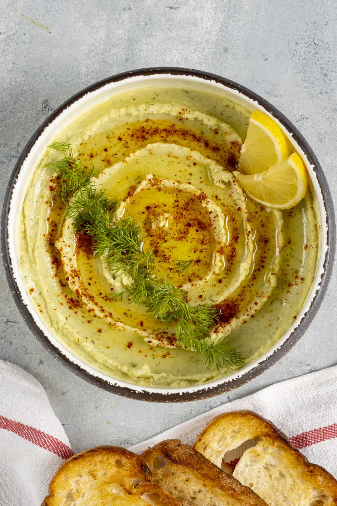

Fava Hummus

image source
Fresh fava beans can be found only in spring but dry fava beans are at the
markets all year round. If you have fresh fava beans on hand, then you
should check out our basic fresh fava bean recipe and whole fava beans
with tomatoes. Today, we are sharing one of our favorite dips: Dried fava
dip.
This fava dip is a popular mezze in Turkey, which is also called “fava” in
Turkish. It is often served with several other mezze dishes including
Turkish fritters, haydari, authentic hummus, babaganoush and cacik.
Ingredients
- 1 pound (450g) dried fava beans
- ¼ cup olive oil
- 1 large onion, finely chopped
- 3 cup hot water
- 1 lemon, juice only
- 1 teaspoon salt
- ¼ cup fresh dill, chopped
- Red pepper flakes and fresh dill for garnish
Steps
-
Soak dried fava beans for 6-7 hours or overnight. Drain
and rinse them well..
-
Peel their skin off by pinching each bean between your thumb and
forefinger. Put them aside. You will have
about 1 and ½ cups shelled beans.
-
Heat olive oil in a pan and cook finely chopped onion until translucent.
-
Add in peeled fava beans and pour 3 cups hot water over
them. Cook covered until the beans are tender, stirring occasionally.
This might take 1 hour. Add extra water (start with
¼ cup and add more if needed) if all the water is
absorbed but the beans haven’t become tender yet. Remove from the heat.
-
Add in lemon juice, salt and finely chopped fresh dill and put them in a
food processor. Pulse until creamy. If it is too thick and hard to
pulse, add a little cold water. Start with
1-2 tablespoons of water and check if more is needed to
have a creamy texture.
-
Refrigerate at least for 30 minutes before serving.
-
Serve with extra olive oil, fresh dill and red pepper flakes on it.
Return to top
Return to Home page
Content of this page has been reproduced from the original
article